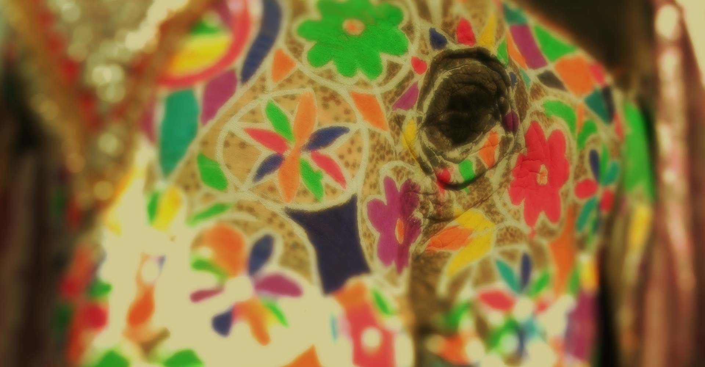
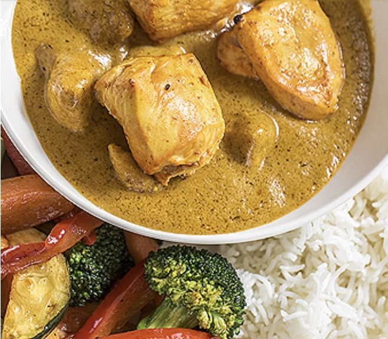
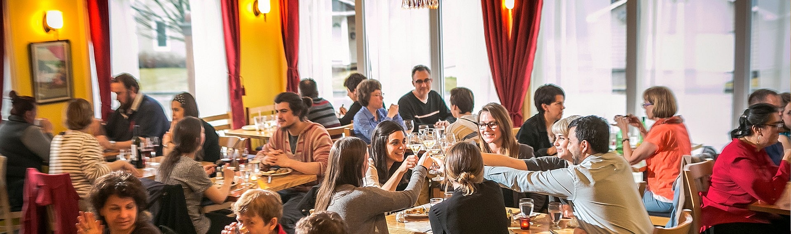
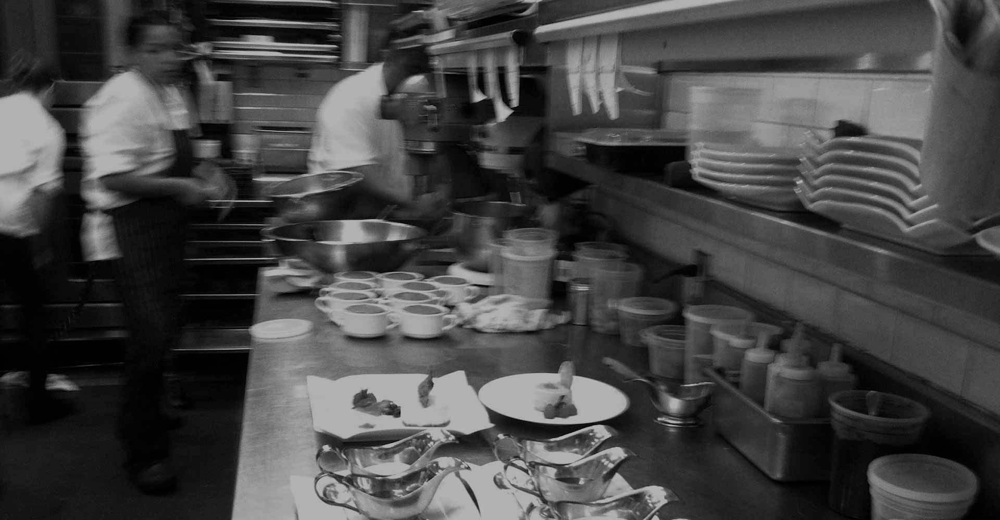
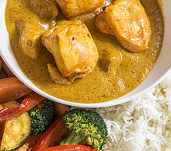
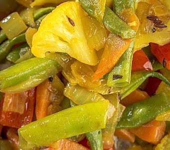

01शुरुआत
Shuruaat
To begin: dahl soup, crisp pakoras and samosas with hot and mild chutneys.

शालीमार
Fine Indian cuisine made with love and great attention to detail, in Sherbrooke since 1990. Wine, beer and spirits.
Take-out orders can be called in from 2 pm —
please allow 30 to 45 minutes
Our story
From our own garden
Every summer, vegetables and spices grow organically in our family garden in Canton-de-Hatley, then end up on your table.
Vegetarian and vegan
Lean cuts of meat, and a vegetarian menu as varied as India’s regions — with vegan options throughout.

“I love the food, the decor, the owners, the employees!”
A Shalimar guest

Since 1990
From Northern India to Kerala, our cuisine keeps growing with the tastes of Sherbrooke

The kitchen
Enjoy our unique selection of traditional and regional dishes — from the clay oven to the handi. Call ahead for special requests. To your health!
01शुरुआत
To begin: dahl soup, crisp pakoras and samosas with hot and mild chutneys.
02तंदूर का तोहफ़ा
Gifts from our traditional clay oven: chicken tandoori, tandoori shrimps and fresh naan.
03बासमती की चाहत
Gosht, murgh, shrimp and vegetable biryani, cooked with saffron and roasted spices.
04करी का ख़ज़ाना
Our butter chicken, tikka masala, vindaloo from Goa and a slow-cooked beef korma.
05हरी भरी
Vegetarian and vegan: saag paneer, kofta, baigan achari, chana masala and dahl.
06मीठा
Something sweet: gulaab jamun, kheer, mango lassi and a cup of masala chai.
Combination for two
Dahl soup or pakoras, butter chicken, vegetable or beef curry, basmati rice, naan, raita and chutneys.

Family dinner for four
Dahl soup or pakoras, butter chicken, vegetable curry, basmati rice, naan and raita.

Vegetarian or vegan for two
Dahl soup or pakoras, matar paneer or vegetable kofta, chana masala, vegetable curry, naan and rice.
Add a Kingfisher
India’s number one beer — light bitterness and subtle citrus, the perfect partner to Indian food.
Find us
आपका स्वागत है
Opening hours
स्वागत है
Reservations
Reservations are taken by phone only. Take-out orders can be called in as early as 2 pm — please allow 30 to 45 minutes for preparation before pick-up.